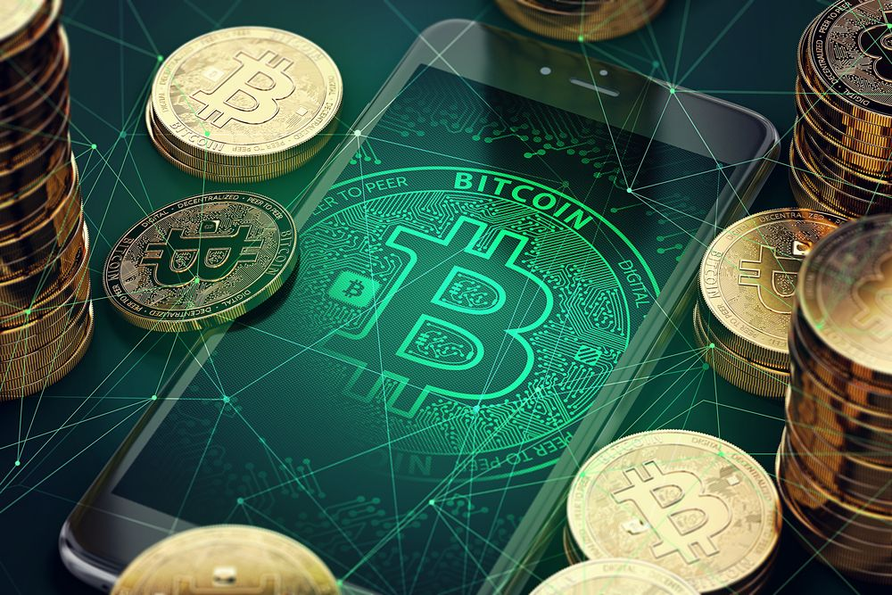
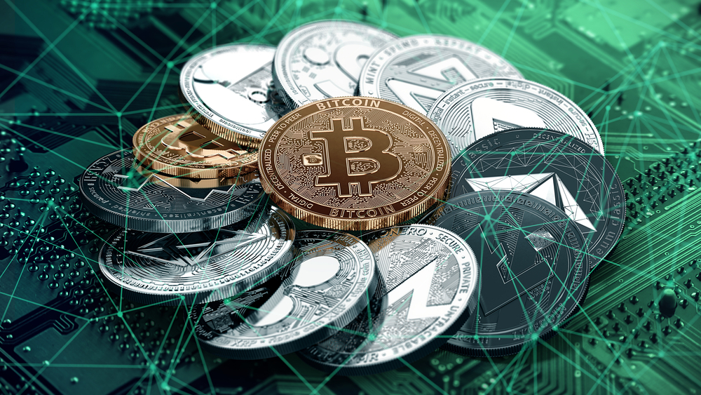

What is Cryptocurrency: [Everything You Need To Know!]
 Courses Learning Tracks Pricing Plans Certificates of Completion My Courses Course Library Investor Course Guides Cryptocurrency 101 How to Invest in Cryptocurrency Ethereum 101 DeFi 101 Blockchain 101 Bitcoin 101 Infographics Videos Blockchain Development Bootcamp News Community Ask Blockchain Community Partners Directory Advertise with us About Contact us Courses Learning Tracks Pricing Plans Certificates of Completion My Courses Course Library Investor Course Guides Cryptocurrency 101 How to Invest in Cryptocurrency Ethereum 101 DeFi 101 Blockchain 101 Bitcoin 101 Infographics Videos Blockchain Development Bootcamp News Community Ask Blockchain Community Partners Directory Advertise with us About Contact us Login Free Trial Login Ask Blockchain Community Guides Favorite Guides Blockchain For Business For Investors For Intermediate For Developers Startups Cryptocurrency DeFi For Investors Security Blockchain Community RSK Aion Network Cosmos Maker Malta Articles Videos Content Understanding Cryptocurrency Basics 101 How cryptocurrency works? What is cryptocurrency? Blockchain and Cryptocurrency What is cryptocurrency mining? Revolutionary Properties Understanding cryptocurrency properties What is Cryptocurrency: Monetary properties Understanding cryptocurrency: Dawn of a new economy Cryptocurrency list The Evolution of Cryptocurrencies Going Mainstream with Central Bank Digital Currency (CBDC) What is Cryptocurrency: Conclusion
Navigation
Beginners Blockchain 101 Blockchain for Business Blockchain for Investors Blockchain Startups CryptocurrencyWhat is Cryptocurrency? [Everything You Need To Know!]
AuthorAmeer Rosic
Back to Guides EN AR ZH FR DE IT ID JA KO FA PT RU ES TR Tweet 27 Share 11K Share 1K WhatsAppWhat Is Cryptocurrency: 21st-Century Unicorn – Or The Money Of The Future?
TL;DR:
Cryptocurrency is an internet-based medium of exchange which uses cryptographical functions to conduct financial transactions. Cryptocurrencies leverage blockchain technology to gain decentralization, transparency, and immutability. The most important feature of a cryptocurrency is that it is not controlled by any central authority: the decentralized nature of the blockchain makes cryptocurrencies theoretically immune to the old ways of government control and interference. Cryptocurrencies can be sent directly between two parties via the use of private and public keys. These transfers can be done with minimal processing fees, allowing users to avoid the steep fees charged by traditional financial institutions.Today cryptocurrencies ( Buy Crypto ) have become a global phenomenon known to most people. In this guide, we are going to tell you all that you need to know about cryptocurrencies and the sheer that they can bring into the global economic system.
Nowadays, you‘ll have a hard time finding a major bank, a big accounting firm, a prominent software company or a government that did not research cryptocurrencies, publish a paper about it or start a so-called blockchain-project. (Take our blockchain courses to learn more about the blockchain)
“Virtual currencies, perhaps most notably Bitcoin, have captured the imagination of some, struck fear among others, and confused the heck out of the rest of us .” – Thomas Carper, US-Senator
But beyond the noise and the press releases the overwhelming majority of people – even bankers, consultants, scientists, and developers – have very limited knowledge about cryptocurrencies. They often fail to even understand the basic concepts.
So let‘s walk through the whole story. What are cryptocurrencies?
Understanding Cryptocurrency Basics 101 How cryptocurrency works? What is cryptocurrency? Blockchain and Cryptocurrency What is cryptocurrency mining? Revolutionary Properties Understanding cryptocurrency properties What is Cryptocurrency: Monetary properties Understanding cryptocurrency: Dawn of a new economy Cryptocurrency list The Evolution of Cryptocurrencies Going Mainstream with Central Bank Digital Currency (CBDC) What is Cryptocurrency: ConclusionUnderstanding Cryptocurrency Basics 101
Where did cryptocurrency originate? Why should you learn about cryptocurrency ? And what do you need to know about cryptocurrency?How cryptocurrency works?
Few people know, but cryptocurrencies emerged as a side product of another invention. Satoshi Nakamoto, the unknown inventor of Bitcoin , the first and still most important cryptocurrency, never intended to invent a currency.
In his announcement of Bitcoin in late 2008, Satoshi said he developed “A Peer-to-Peer Electronic Cash System.“
His goal was to invent something; many people failed to create before digital cash.
Announcing the first release of Bitcoin, a new electronic cash system that uses a peer-to-peer network to prevent double-spending. It’s completely decentralized with no server or central authority. – Satoshi Nakamoto, 09 January 2009, announcing Bitcoin on SourceForge.
The single most important part of Satoshi‘s invention was that he found a way to build a decentralized digital cash system. In the nineties, there have been many attempts to create digital money, but they all failed.
… after more than a decade of failed Trusted Third Party based systems (Digicash, etc) , they see it as a lost cause. I hope they can make the distinction, that this is the first time I know of that we’re trying a non-trust based system. – Satoshi Nakamoto in an E-Mail to Dustin Trammell
After seeing all the centralized attempts fail, Satoshi tried to build a digital cash system without a central entity. Like a Peer-to-Peer network for file sharing.
This decision became the birth of cryptocurrency. They are the missing piece Satoshi found to realize digital cash. The reason why is a bit technical and complex, but if you get it, you‘ll know more about cryptocurrencies than most people do. So, let‘s try to make it as easy as possible:
To realize digital cash you need a payment network with accounts, balances, and transaction. That‘s easy to understand. One major problem every payment network has to solve is to prevent the so-called double spending : to prevent that one entity spends the same amount twice. Usually, this is done by a central server who keeps record about the balances.
In a decentralized network , you don‘t have this server. So you need every single entity of the network to do this job. Every peer in the network needs to have a list with all transactions to check if future transactions are valid or an attempt to double spend.
But how can these entities keep a consensus about these records?
If the peers of the network disagree about only one single, minor balance, everything is broken. They need an absolute consensus. Usually, you take, again, a central authority to declare the correct state of balances. But how can you achieve consensus without a central authority?
Nobody did know until Satoshi emerged out of nowhere. In fact, nobody believed it was even possible.
Satoshi proved it was. His major innovation was to achieve consensus without a central authority. Cryptocurrencies are a part of this solution – the part that made the solution thrilling, fascinating and helped it to roll over the world.
What is cryptocurrency?
If you take away all the noise around cryptocurrencies and reduce it to a simple definition, you find it to be just limited entries in a database no one can change without fulfilling specific conditions . This may seem ordinary, but, believe it or not: this is exactly how you can define a currency.
Take the money on your bank account: What is it more than entries in a database that can only be changed under specific conditions? You can even take physical coins and notes: What are they else than limited entries in a public physical database that can only be changed if you match the condition than you physically own the coins and notes? Money is all about a verified entry in some kind of database of accounts, balances, and transactions.
So, to give a proper definition Cryptocurrency is an internet-based medium of exchange which uses cryptographical functions to conduct financial transactions. Cryptocurrencies leverage blockchain technology to gain decentralization, transparency, and immutability.
How miners create coins and confirm transactions
Let‘s have a look at the mechanism ruling the databases of cryptocurrencies. A cryptocurrency like Bitcoin consists of a network of peers. Every peer has a record of the complete history of all transactions and thus of the balance of every account.
A transaction is a file that says, “Bob gives X Bitcoin to Alice“ and is signed by Bob‘s private key. It‘s basic public key cryptography, nothing special at all. After signed, a transaction is broadcasted in the network, sent from one peer to every other peer. This is basic p2p-technology.
Blockchain and Cryptocurrency
The transaction is known almost immediately by the whole network. But only after a specific amount of time it gets confirmed.
Confirmation is a critical concept in cryptocurrencies. You could say that cryptocurrencies are all about confirmation.
As long as a transaction is unconfirmed, it is pending and can be forged. When a transaction is confirmed, it is set in stone. It is no longer forgeable, it can‘t be reversed, it is part of an immutable record of historical transactions: of the so-called blockchain .
Only miners can confirm transactions. This is their job in a cryptocurrency-network. They take transactions, stamp them as legit and spread them in the network. After a transaction is confirmed by a miner, every node has to add it to its database. It has become part of the blockchain.
For this job, the miners get rewarded with a token of the cryptocurrency, for example with Bitcoins. Since the miner‘s activity is the single most important part of the cryptocurrency-system we should stay for a moment and take a deeper look at it.
“In the next few years, we are going to see national governments take large steps towards instituting a cashless society where people transact using centralized digital currencies. Simultaneously, the decentralized cryptocurrencies – that some even view as harder money – will see increased use from all sectors.” – Caleb Chen London Trust MediaWhat is cryptocurrency mining?
Principally everybody can be a miner. Since a decentralized network has no authority to delegate this task, a cryptocurrency needs some kind of mechanism to prevent one ruling party from abusing it. Imagine someone creates thousands of peers and spreads forged transactions. The system would break immediately.
So, Satoshi set the rule that the miners need to invest some work of their computers to qualify for this task. In fact, they have to find a hash – a product of a cryptographic function – that connects the new block with its predecessor. This is called the Proof-of-Work . In Bitcoin, it is based on the SHA 256 Hash algorithm .
Image Credit: https://privacycanada.net
You don‘t need to understand the details about SHA 256. It‘s only important you know that it can be the basis of a cryptologic puzzle the miners compete to solve. After finding a solution, a miner can build a block and add it to the blockchain. As an incentive, he has the right to add a so-called coinbase transaction that gives him a specific number of Bitcoins . This is the only way to create valid Bitcoins.
Bitcoins can only be created if miners solve a cryptographic puzzle. Since the difficulty of this puzzle increases the amount of computer power the whole miner’s invest, there is only a specific amount of cryptocurrency token that can be created in a given amount of time. This is part of the consensus no peer in the network can break.
Revolutionary Properties
If you really think about it, Bitcoin, as a decentralized network of peers that keep a consensus about accounts and balances, is more a currency than the numbers you see in your bank account. What are these numbers more than entries in a database – a database which can be changed by people you don‘t see and by rules you don‘t know?
“It is that narrative of human development under which we now have other fights to fight, and I would say in the realm of Bitcoin it is mainly the separation of money and state.”– Erik Voorhees, cryptocurrency entrepreneur
Basically, cryptocurrencies are entries about token in decentralized consensus-databases. They are called CRYPTOcurrencies because the consensus-keeping process is secured by strong cryptography. Cryptocurrencies are built on cryptography . They are not secured by people or by trust, but by math. It is more probable that an asteroid falls on your house than that a bitcoin address is compromised.
Describing the properties of cryptocurrencies we need to separate between transactional and monetary properties. While most cryptocurrencies share a common set of properties, they are not carved in stone.
Understanding cryptocurrency properties
1) Irreversible: After confirmation, a transaction can‘t be reversed. By nobody. And nobody means nobody. Not you, not your bank, not the president of the United States, not Satoshi, not your miner. Nobody. If you send money, you send it. Period. No one can help you, if you sent your funds to a scammer or if a hacker stole them from your computer. There is no safety net.
2) Pseudonymous: Neither transactions nor accounts are connected to real-world identities. You receive Bitcoins on so-called addresses, which are randomly seeming chains of around 30 characters. While it is usually possible to analyze the transaction flow, it is not necessarily possible to connect the real-world identity of users with those addresses.
3) Fast and global: Transactions are propagated nearly instantly in the network and are confirmed in a couple of minutes. Since they happen in a global network of computers they are completely indifferent of your physical location. It doesn‘t matter if I send Bitcoin to my neighbor or to someone on the other side of the world .
4) Secure: Cryptocurrency funds are locked in a public key cryptography system. Only the owner of the private key can send cryptocurrency. Strong cryptography and the magic of big numbers make it impossible to break this scheme. A Bitcoin address is more secure than Fort Knox.
5) Permissionless : You don‘t have to ask anybody to use cryptocurrency. It‘s just a software that everybody can download for free. After you installed it, you can receive and send Bitcoins or other cryptocurrencies. No one can prevent you. There is no gatekeeper.
What is Cryptocurrency: Monetary properties
1) Controlled supply : Most cryptocurrencies limit the supply of the tokens. In Bitcoin, the supply decreases in time and will reach its final number sometime around the year 2140. All cryptocurrencies control the supply of the token by a schedule written in the code. This means the monetary supply of a cryptocurrency in every given moment in the future can roughly be calculated today. There is no surprise.
2) No debt but bearer : The Fiat-money on your bank account is created by debt , and the numbers, you see on your ledger represent nothing but debts. It‘s a system of IOU. Cryptocurrencies don‘t represent debts, they just represent themselves.
To understand the revolutionary impact of cryptocurrencies you need to consider both properties. Bitcoin as a permissionless, irreversible, and pseudonymous means of payment is an attack on the control of banks and governments over the monetary transactions of their citizens. You can‘t hinder someone to use Bitcoin, you can‘t prohibit someone to accept a payment, you can‘t undo a transaction.
As money with a limited, controlled supply that is not changeable by a government, a bank or any other central institution, cryptocurrencies attack the scope of the monetary policy. They take away the control central banks take on inflation or deflation by manipulating the monetary supply.
“While it’s still fairly new and unstable relative to the gold standard, cryptocurrency is definitely gaining traction and will most certainly have more normalized uses in the next few years. Right now, in particular, it’s increasing in popularity with the post-election market uncertainty. The key will be in making it easy for large-scale adoption (as with anything involving crypto) including developing safeguards and protections for buyers/investors. I expect that within two years , we’ll be in a place where people can shove their money under the virtual mattress through cryptocurrency, and they’ll know that wherever they go, that money will be there.” – Sarah Granger, Author, and Speaker.
Understanding cryptocurrency: Dawn of a new economy
Mostly due to its revolutionary properties cryptocurrencies have become a success their inventor, Satoshi Nakamoto, didn‘t dare to dream of it. While every other attempt to create a digital cash system didn‘t attract a critical mass of users, Bitcoin had something that provoked enthusiasm and fascination. Sometimes it feels more like religion than technology.
Cryptocurrencies are digital gold. Sound money that is secure from political influence. Money promises to preserve and increase its value over time. Cryptocurrencies are also a fast and comfortable means of payment with a worldwide scope, and they are private and anonymous enough to serve as a means of payment for black markets and any other outlawed economic activity.
But while cryptocurrencies are more used for payment, its use as a means of speculation and a store of value dwarfs the payment aspects. Cryptocurrencies gave birth to an incredibly dynamic, fast-growing market for investors and speculators. Exchanges like Okcoin, Poloniex or shapeshift enable the trade of hundreds of cryptocurrencies . Their daily trade volume exceeds that of major European stock exchanges.
At the same time, the praxis of Initial Coin Distribution (ICO), mostly facilitated by Ethereum ‘s smart contracts, gave life to incredibly successful crowdfunding projects, in which often an idea is enough to collect millions of dollars. In the case of “The DAO,” it has been more than 150 million dollars.
In this rich ecosystem of coins and token, you experience extreme volatility. It‘s common that a coin gains 10 percent a day – sometimes 100 percent – just to lose the same the next day. If you are lucky, your coin‘s value grows up to 1000 percent in one or two weeks.
Cryptocurrency list
While Bitcoin remains by far the most famous cryptocurrency and most other cryptocurrencies have zero non-speculative impact, investors and users should keep an eye on several cryptocurrencies. Here we present the most popular cryptocurrencies of today.
Source: coinmarketcap
Bitcoin
The one and only, the first and most famous cryptocurrency. Bitcoin serves as a digital gold standard in the whole cryptocurrency-industry, is used as a global means of payment and is the de-facto currency of cyber-crime like darknet markets or ransomware. After seven years in existence, Bitcoin‘s price has increased from zero to more than 650 Dollar, and its transaction volume reached more than 200.000 daily transactions.
There is not much more to say Bitcoin is here to stay.
Ethereum
The brainchild of young crypto-genius Vitalik Buterin has ascended to the second place in the hierarchy of cryptocurrencies. Other than Bitcoin its blockchain does not only validate a set of accounts and balances but of so-called states. This means that ethereum can not only process transactions but complex contracts and programs.
This flexibility makes Ethereum the perfect instrument for blockchain -application. But it comes at a cost. After the Hack of the DAO – an Ethereum based smart contract – the developers decided to do a hard fork without consensus, which resulted in the emerge of Ethereum Classic . Besides this, there are several clones of Ethereum, and Ethereum itself is a host of several Tokens like DigixDAO and Augur. This makes ethereum more a family of cryptocurrencies than a single currency.
Ripple
While Ripple has a native cryptocurrency – XRP – it is more about a network to process IOUs than the cryptocurrency itself. XRP, the currency, doesn‘t serve as a medium to store and exchange value, but more as a token to protect the network against spam.
Ripple, unlike Bitcoin and ethereum , has no mining since all the coins are already pre-mined. Ripple has found immense value in the financial space as a lot of banks have joined the Ripple network.
Litecoin
Litecoin was one of the first cryptocurrencies after Bitcoin and tagged as the silver to the digital gold bitcoin. Faster than bitcoin, with a larger amount of token and a new mining algorithm, Litecoin was a real innovation, perfectly tailored to be the smaller brother of bitcoin. “It facilitated the emerge of several other cryptocurrencies which used its codebase but made it, even more, lighter“. Examples are Dogecoin or Feathercoin.
While Litecoin failed to find a real use case and lost its second place after bitcoin, it is still actively developed and traded and is hoarded as a backup if Bitcoin fails.
Monero
Monero is the most prominent example of the CryptoNight algorithm. This algorithm was invented to add the privacy features Bitcoin is missing. If you use Bitcoin, every transaction is documented in the blockchain and the trail of transactions can be followed. With the introduction of a concept called ring-signatures, the CryptoNight algorithm was able to cut through that trail.
The first implementation of CryptoNight, Bytecoin, was heavily premined and thus rejected by the community. Monero was the first non-premined clone of bytecoin and raised a lot of awareness. There are several other incarnations of cryptonote with their own little improvements, but none of it did ever achieve the same popularity as Monero.
Monero‘s popularity peaked in summer 2016 when some darknet markets decided to accept it as a currency. This resulted in a steady increase in the price, while the actual usage of Monero seems to remain disappointingly small.
Besides those, there are hundreds of cryptocurrencies of several families. Most of them are nothing more than attempts to reach investors and quickly make money, but a lot of them promise playgrounds to test innovations in cryptocurrency-technology.
The Evolution of Cryptocurrencies
Your standard cryptocurrency has evolved significantly over time. One of the most significant crypto implementations happens to be stablecoins, aka cryptocurrencies that use special cryptography to remain price stable. There are three kinds of stablecoins in the market:
Fiat-backed. Crypto-backed. Algorithm-based (seignorage).If you wish to learn more about stablecoins then do check out our guide on the same. While there is no need to get into the details, let’s see why these have exploded in popularity in recent times.
The best of both worlds: One of the most attractive features of stablecoins is the fact that it provides you with the best of both worlds, fiat, and crypto. The lack of stability and extreme volatility have been often cited as the biggest reasons holding back crypto adoption. However, stablecoins completely mitigate this issue by ensuring price stability. However, despite this, it’s still based on blockchain technology and gives you the benefits of decentralization and immutability inherent in blockchain technology. DApps: Decentralized Finance (DeFi) has been touted as the future of finance and one of the biggest drivers of blockchain adoption. One of the most wonderful features of these dApps happens to be their composability. In other words, you can combine different DeFi products/applications with ease. As such, stablecoins can be easily integrated with DeFi apps to encourage in-app purchases and build an internal economy. Faster remittance: Stablecoins allow you to conduct cross-border payments and remittances at a much faster rate.Going Mainstream with Central Bank Digital Currency (CBDC)
Central Bank Digital Currencies or CBDCs are a practical implementation of stablecoins that can push cryptocurrency into the mainstream market. The idea is to have a digital form of fiat money that can be used as legal tender, generated by the country’s central bank.
What are the advantages of CBDC?
The cost of making cash can be very high for countries living on secluded islands. CBDCs can help mitigate these costs. Traditional financial systems often deal with loads of intermediaries involved that shoot up the costs and fees involved. CBDC could be a brilliant method for banking the unbanked. According to the World Bank, around 80% of people in Indonesia, the Philippines, and Vietnam, and 30% in Malaysia and Thailand, are unbanked. In Myanmar, only 23% of people have a legit bank account. CBDC can help create an inclusive financial system. CBDC can make the global payment system a lot more resilient. Currently, the payment system is concentrated in the hands of a few large companies. Using a DLT-based coin can have a very positive effect here. According to IMF, a properly executed CBDC can counter new digital currencies. Privately-issued digital currencies can be a regulatory nightmare. A domestically-issued CBDC which is, denominated in the domestic unit of account, would help counter this problem. One of the biggest problems with cryptocurrencies is its price volatility. With CBDCs, governments can use a private blockchain to control price volatility. While this will compromise on decentralization, it can help increase the widespread usage of blockchain technology. Speaking of widespread usage of blockchain technology, utilizing CBDCs can help banks experiment more with Distributed Ledger Technology (DLT). Some central banks are considering the option of providing CBDC only to institutional market participants in order to develop DLT-based asset markets. CBDCs can increase the economy’s response to changes in the policy rate. For example, during a period of prolonged crisis, CBDCs can theoretically be used to charge negative interest rates. CBDCs can help encourage competition and innovation in the financial sector. New entrants can build on the tech to enter the payments space and provide their own solutions. It will also reduce the need for most smaller banks and non-banks to run their payments through the larger banks. As electronic and digital payments take over from physical cash, the central banks will look to replace physical cash with its electronic equivalent, i.e., CBDC. Doing this will increase the proceeds from creating money, aka, seigniorage, earned by the bank.Examples of CBDC
China and Digital Yuan. Bank of Thailand’s and Project Inthanon. The Marshall Islands and Marshallese sovereign (SOV).What is Cryptocurrency: Conclusion
The market of cryptocurrencies is fast and wild. Nearly every day new cryptocurrencies emerge, old die, early adopters get wealthy and investors lose money. Every cryptocurrency comes with a promise, mostly a big story to turn the world around. Few survive the first months, and most are pumped and dumped by speculators and live on as zombie coins until the last bagholder loses hope ever to see a return on his investment.
“In 2 years from now, I believe cryptocurrencies will be gaining legitimacy as a protocol for business transactions, micropayments, and overtaking Western Union as the preferred remittance tool. Regarding business transactions – you’ll see two paths: There will be financial businesses that use it for it’s no fee, nearly-instant ability to move any amount of money around, and there will be those that utilize it for its blockchain technology. Blockchain technology provides the largest benefit with trustless auditing, single source of truth, smart contracts, and color coins.”– Cody Littlewood, and I’m the founder and CEO of Codelitt
Markets are dirty. But this doesn‘t change the fact that cryptocurrencies are here to stay – and here to change the world. This is already happening. People all over the world buy Bitcoin to protect themselves against the devaluation of their national currency. Mostly in Asia, a vivid market for Bitcoin remittance has emerged, and the Bitcoin using darknets of cybercrime are flourishing. More and more companies discover the power of Smart Contracts or token on Ethereum, the first real-world application of blockchain technologies emerge.
The revolution is already happening. Institutional investors start to buy cryptocurrencies. Banks and governments realize that this invention has the potential to draw their control away. Cryptocurrencies change the world. Step by step. You can either stand beside and observe – or you can become part of history in the making.
Interested in trading crypto? Take our cryptocurrency investing courses !
“If the trend continues, the average person will not be able to afford to purchase one whole bitcoin in 2 years. As global economies inflate and markets exhibit signs of recession, the world will turn to Bitcoin as a hedge against fiat turmoil and an escape against capital controls. Bitcoin is the way out, and cryptocurrency as a whole is never going away, it’s going to grow in use and acceptance as it matures.”– Brad Mills: Serial Tech Entrepreneur
Like what you read? Give us one like or share it to your friends and get +16
12,466 Have a question? Ask our Community 12,466 Have questions? We have built an incredible community of blockchain enthusiasts from every corner of the industry. If you have questions, we have answers! Ask community1) Q: What is cryptocurrency?
1 1) Q: What is cryptocurrency? asked 2019-08-15 Ameer Rosic 1 answers 1 votes 1 A: Cryptocurrency is an internet-based medium of exchange which uses cryptographic functions to conduct financial transactions. Cryptocurrencies leverage blockchain technology to gain decentralization, transparency, and immutability. Answer Link answered 2019-08-15 Blockgeeks2) Q: How is cryptocurrency sent and received?
1 2) Q: How is cryptocurrency sent and received? asked 2019-08-15 Ameer Rosic 1 answers 1 votes 1 A: Cryptocurrencies can be sent directly between two parties via the use of private and public keys. These transfers can be done with minimal processing fees, allowing users to avoid the steep fees charged by traditional financial institutions. Answer Link answered 2019-08-15 Blockgeeks3) Q: What is the first cryptocurrency?
1 3) What is the first cryptocurrency? asked 2019-08-15 Ameer Rosic 1 answers 1 votes 1 The first cryptocurrency ever created is Bitcoin. Answer Link answered 2019-08-15 Blockgeeks4) Q: What is cryptocurrency mining?
1 4) Q: What is cryptocurrency mining? asked 2019-08-15 Ameer Rosic 1 answers 1 votes 1 A: Cryptocurrency Mining is when a computer is used to solve a cryptographic puzzles in order to build blocks. Miners are rewarded with the cryptocurrency. Answer Link answered 2019-08-15 BlockgeeksLike what you’re reading?
Join our community and get access to over 50 free video lessons, workshops, and guides like this! No credit card needed!
Get StartedRelated Guides
5 Best Hardware Wallets: [The Most Comprehensive List] - Blockgeeks
How To Trade Cryptocurrency - Ultimate Guide
How To Invest in Cryptocurrencies: The Ultimate Beginners Guide
The Best Cryptocurrency Exchanges: [Most Comprehensive Guide List]
What is Bitcoin? [The Most Comprehensive Step-by-Step Guide]
Hungry for knowledge? New guides and courses each week Looking to invest? Market data, analysis, and reports Just curious? A community of blockchain experts to helpGet started today
Join BlockgeeksAlready have an account? Sign In
Related Guides
5 Best Hardware Wallets: [The Most Comprehensive List] - Blockgeeks
How To Trade Cryptocurrency - Ultimate Guide
How To Invest in Cryptocurrencies: The Ultimate Beginners Guide
The Best Cryptocurrency Exchanges: [Most Comprehensive Guide List]
What is Bitcoin? [The Most Comprehensive Step-by-Step Guide]
Top Rated Comment
1 0 Nice blog. We are also working in blockchain development. © 2021 Blockgeeks Course library Contribute Guides Advertise with us Infographics FAQ Support Privacy Terms Become a Blockchain Investor You are going to send email toSend Move Comment
Move
